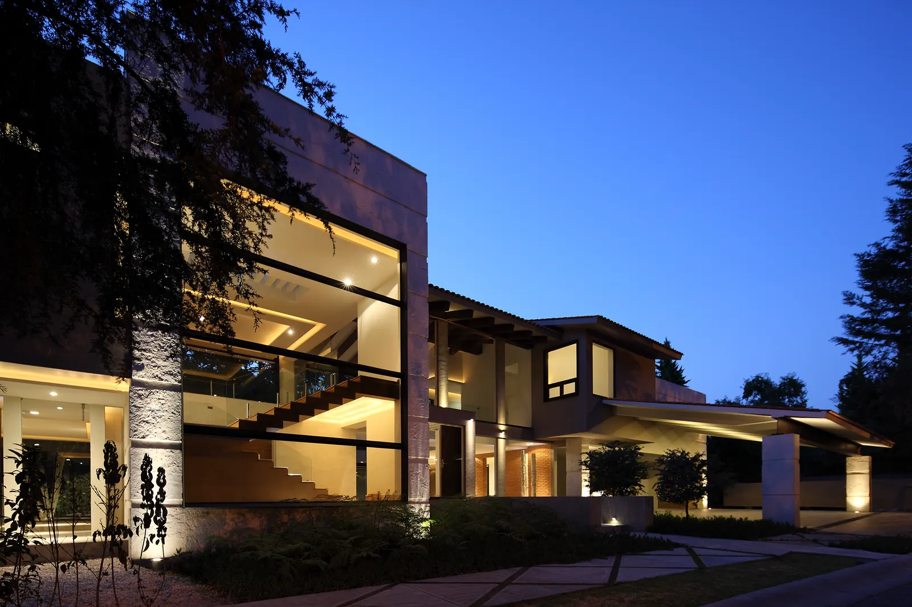
Proyecto
vallescondido el parque
Residencia
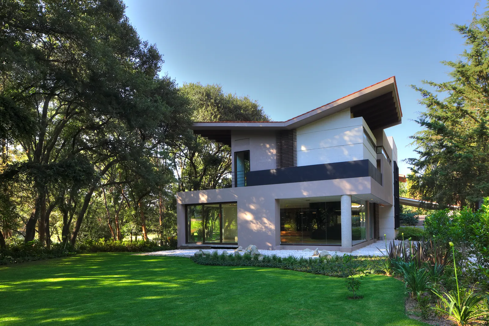


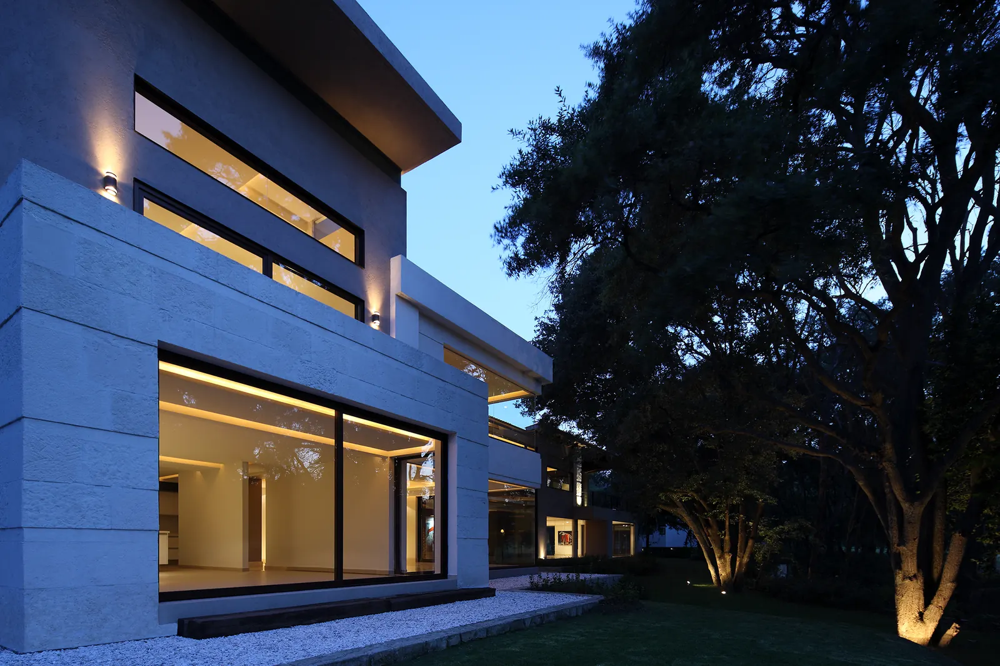

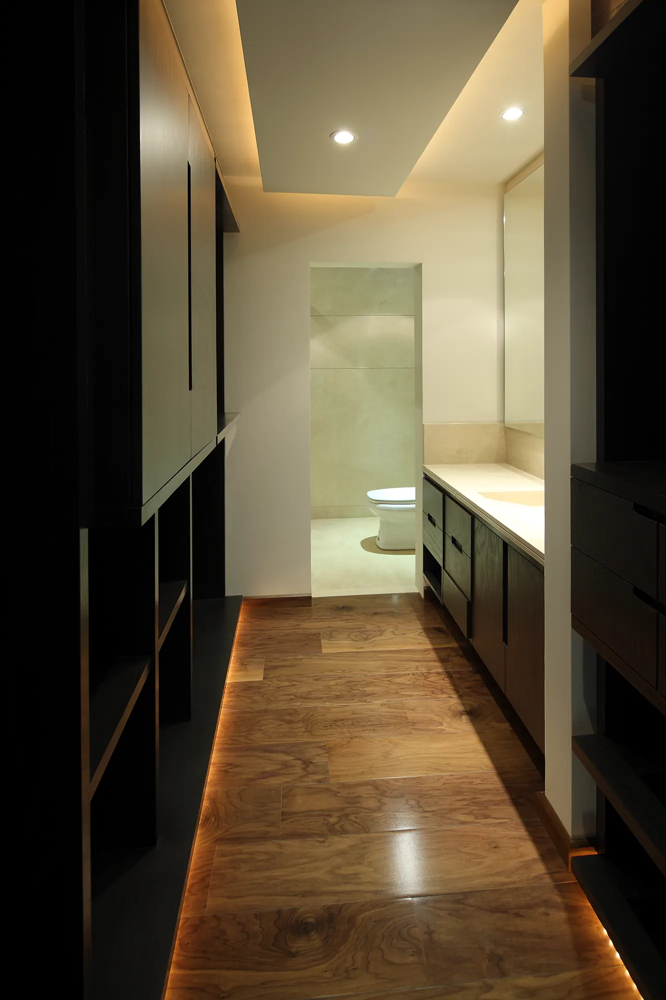

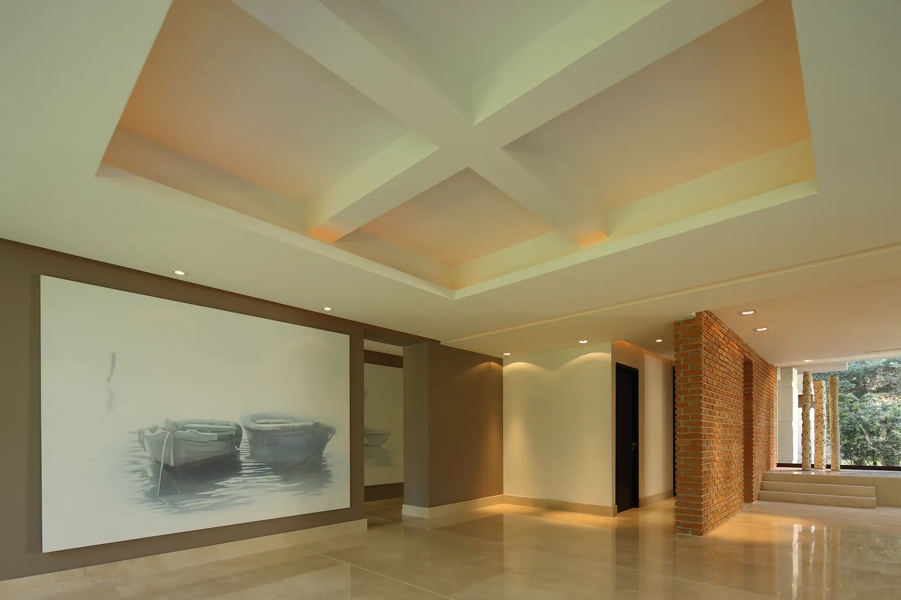


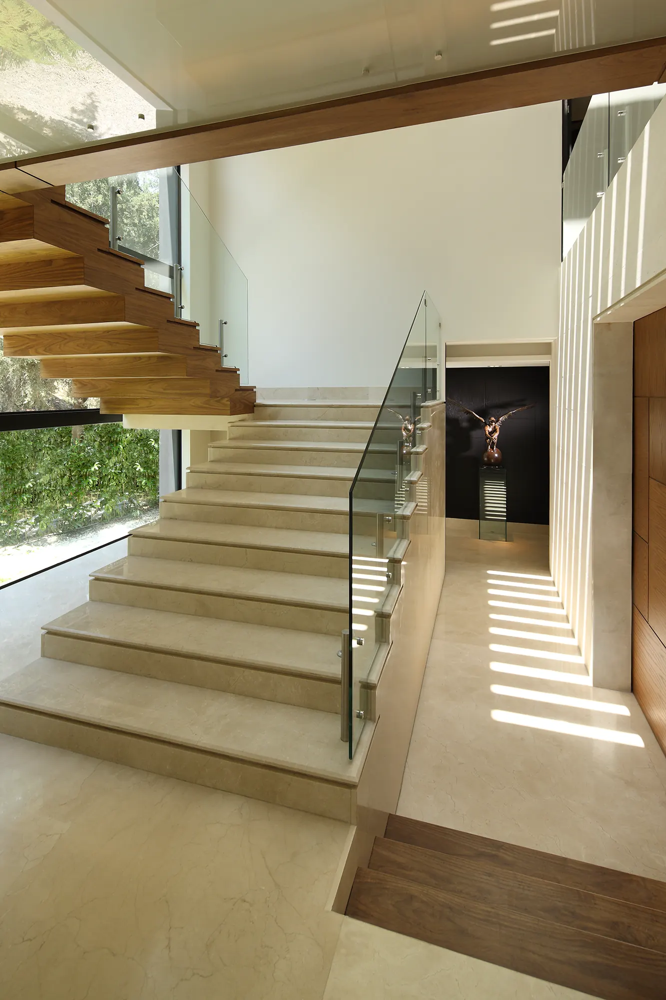
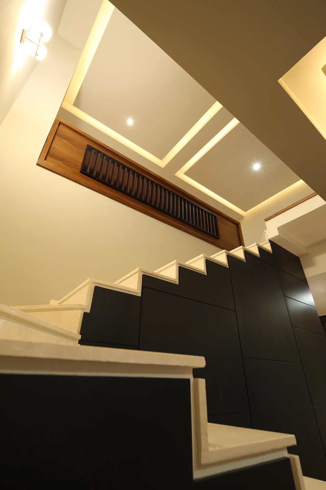
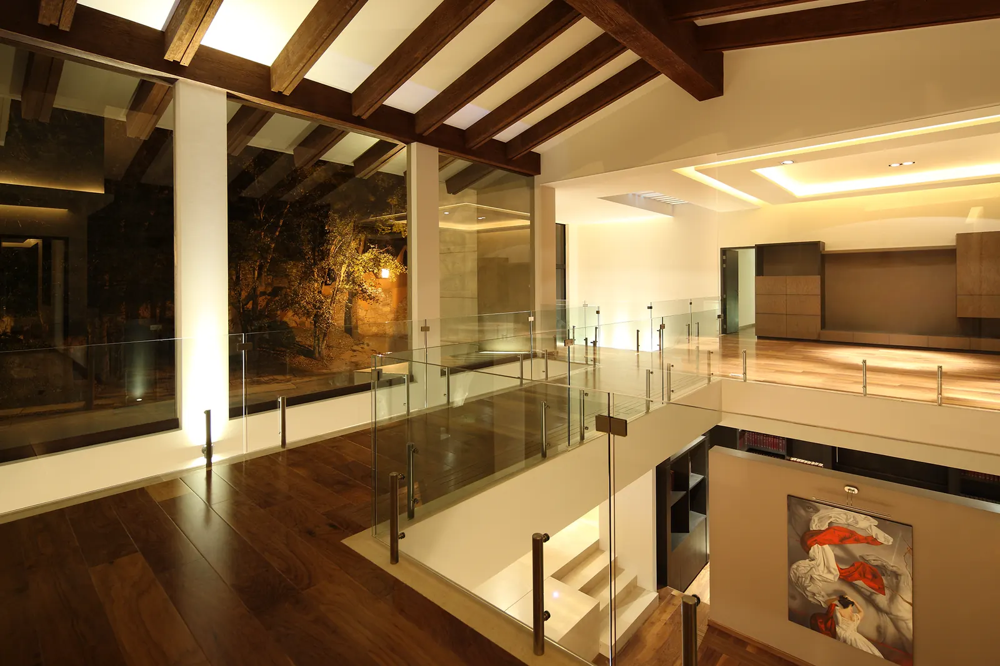


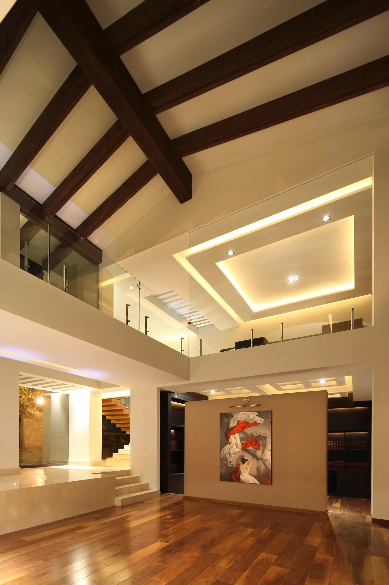
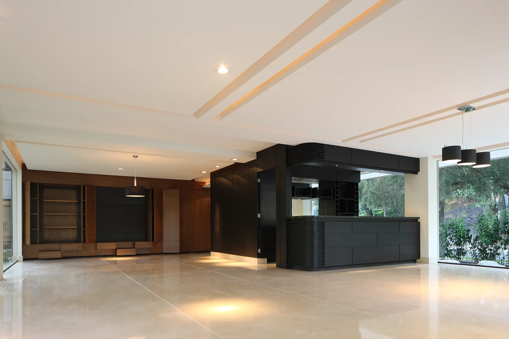
La mañana entra primero por donde la familia desayuna. No es casualidad: cada espacio se orientó según la hora en que se vive. Aquí las puertas se abren a lo verde y la casa se comporta como un lugar de paso hacia afuera.
Siguiente proyecto
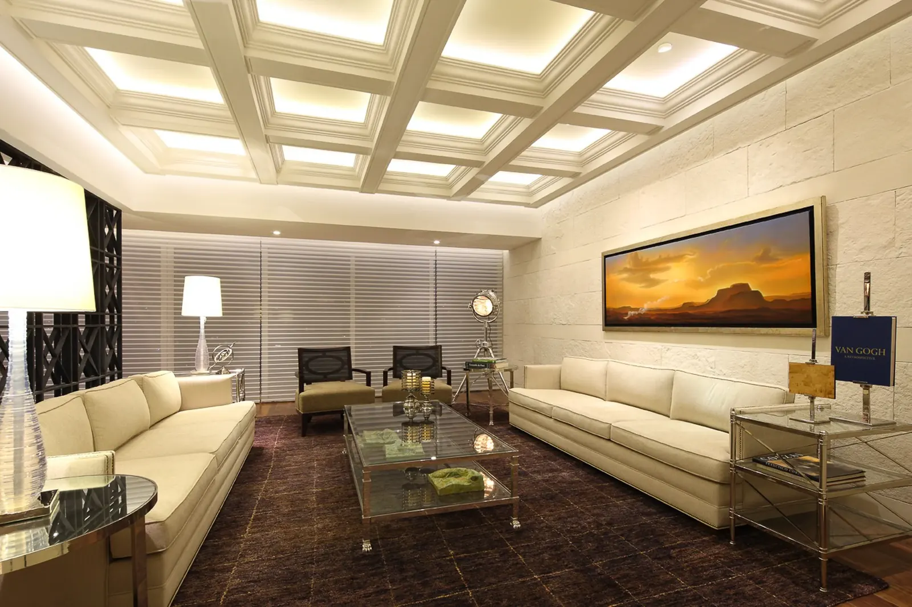
siguiente proyecto: ph club de golf bosques P-013así empieza también el tuyo
Cada trazo de esta galería empieza en una conversación sobre una forma de vivir. La tuya puede ser la próxima.
Agenda una primera conversación